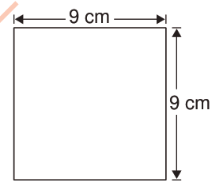

Example 1
Find the area of the following square.

Solution
Length of a side = 9 cm
Area of the square = 9 cm × 9 cm
= 81 cm².
Therefore, the area of the square is 81 cm².
FOR ONLINE READING ONLY
MATHEMATICS STD 4 PB 2024.indd 98
18/09/2025 16:07:48